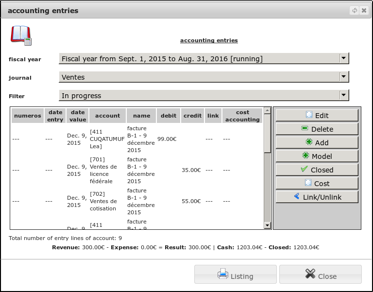
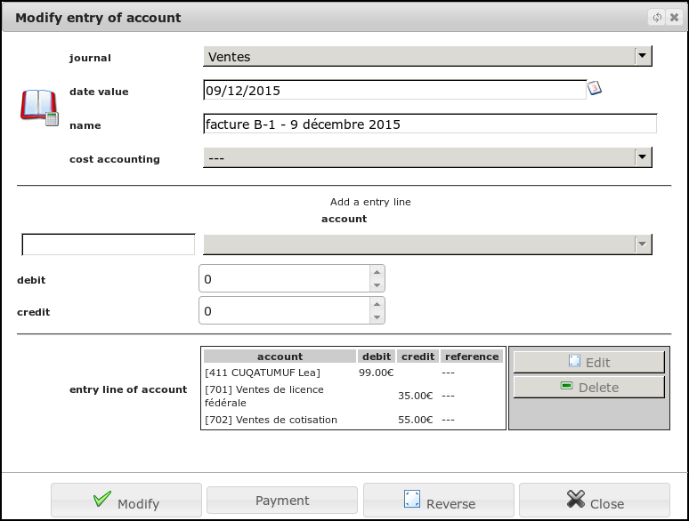
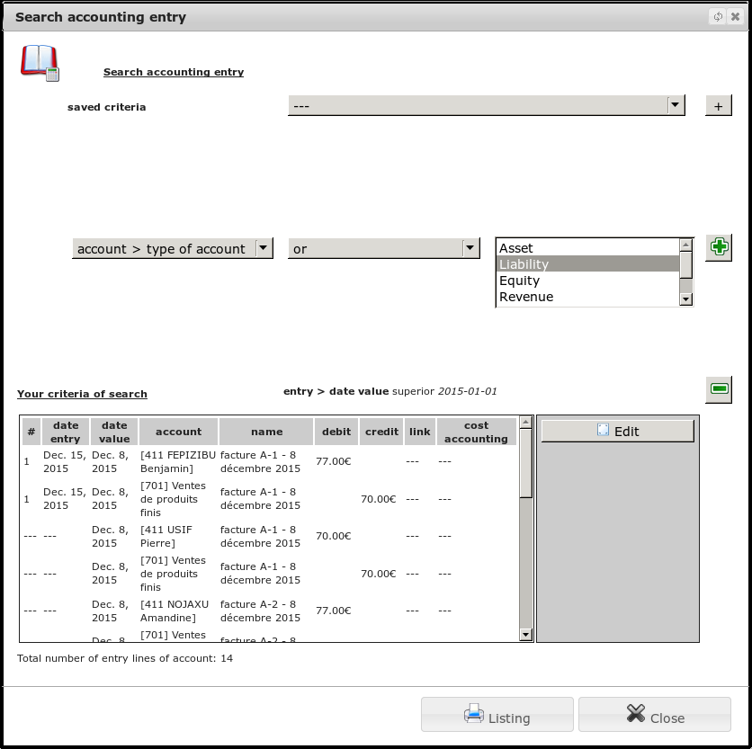

Entry account¶
Add an entry¶
General case
Let us in the menu Financial/Bookkeeping/accounting entries.

From this screen, we have the ability to view the scriptures previously entered as well as add new ones.
As you can see in this screen, you can view entries by newspapers or by state. 5 Status filters are available:
All: no filtering is applied
Ongoing (Fog): only entries not yet validated
Validated: validated only DEJE writings
Scholar: only close or lettered entries avecd’autres
No scholar: only entries not yet literate
And 5 default journals: * Purchasing Journal * Sales Journal * Cash Received Journal * Journal of various operations * last fiscal year report journal
To add an entry, first select which start with newspaper we want to achieve our new writing, and then we click Add the button.
After having specified the dates of your writing, you must add different lines corresponding é your financial transaction.
To add a writing line, enter the account code if you know in the Add line or leave your guide the wizard by clicking the button for the desired account.

The tool will not allow you to validate your writing if it is unbalanced.
When one begins in accounting, sometimes it’s hard to know if a line is debit or credit. To help, message warns you if you have entered a refund or credit and a button allow you to reverse your writing very easily if necessary.
Making a payoff
A write cashing can manually input as before but often a settlement completes a purchase or a sale made more tét few days.
To simplify your entry, reopen the write call or put you want to enter the settlement, click on the “Receipt” button: the application then offers a new writing partially filled. It only remains for you E. specify on which financial account (cash, bank …) you want to perform this operation.
Once a validated cashing via this mechanism, the two scripts (that of buying or selling and the collection) are automatically lettered.
The new journal is to carry only be modified in the initialization phase of your exercise.
At this time, you can be required to perform specific operations such as the distribution of profits for the year previous next several accounts.
By cons, in this paper, it is not possible to add lines scriptures loads or products.
Lettering of entities¶
As we mentioned in a previous chapter, it is regular a set of entries refer to one or more operations municipalities. In this case, you can mark these scriptures as linked: you will then lettrer them.
Most often, lettering is realized between complementary third value entries: between Writing a purchase (or sale) and its associated collection.
But it may happen that we wanted more than two letters writings. For example, you may want to set a 3 bills provider at once. In this case, as you are one cheque only an amount equal the sum é bills, you will a write collection that you will letter with 3 shopping scriptures. A replay of your accounting, it will become so easy to understand that this was a multiple regulation.
To perform this action, select the entries you want link and click the “Letter” button: If the considered tool being consistent, he will realize lettering symbolized by a number é common these writings in the last column of the newspaper.
If you click this button again, you can delete the lettering of this writing and the associated paperwork.
Validation of entity¶
By default, a script is entered in the fog, it is said in an e state it remains editable or deletable.
By cons, it is necessary to finalize your accounting, to validate this write to endorse your input.
To perform this action, select the entries and controlled click the “Submit” button: The application then assign a number to your writings and the date of validation.
Once validated, writing becomes unchangeable: this mechanism provides intangible and irreversible character of your accounting. Since to err is human, instead of deleting a write validation, you will need create a reverse writing to cancel.
This is useful for an accountant responsible to clarify that this Writing is checked against the associated justification. This also serves, in the case of collections of writings, to check that this revenue or expense face well on a bank statement.
To close a fiscal year, all entries must be validated.
Entity Search¶
From the list of entries, the “Search” button allows you define search criteria accounting entries.

By clicking on “Search”, the tool will search in the database all corresponding entries to these criteria. You can then print this list or edit/writing.